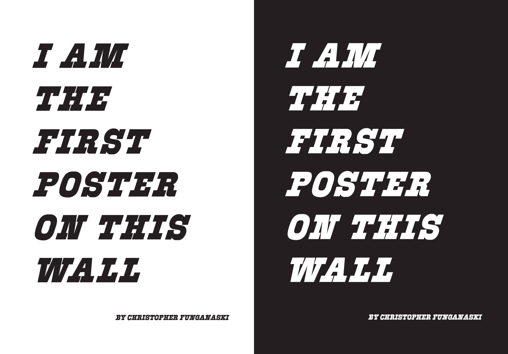
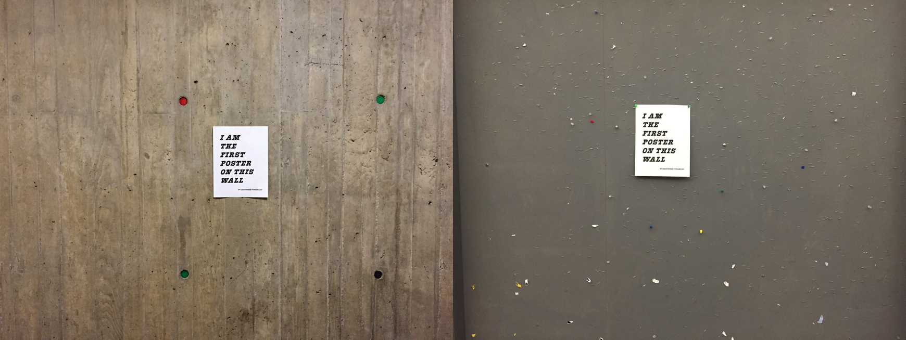
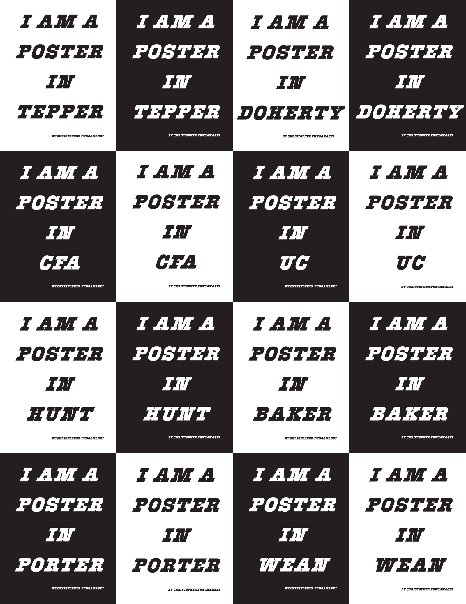
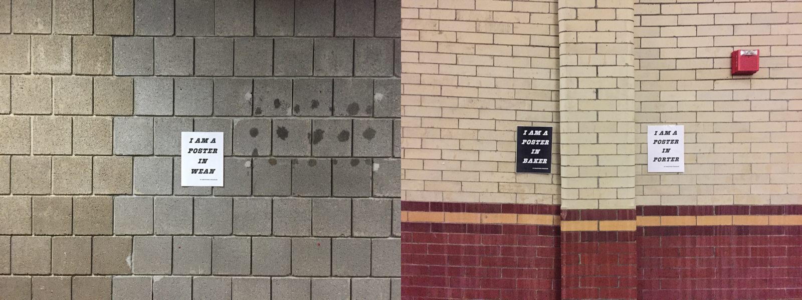
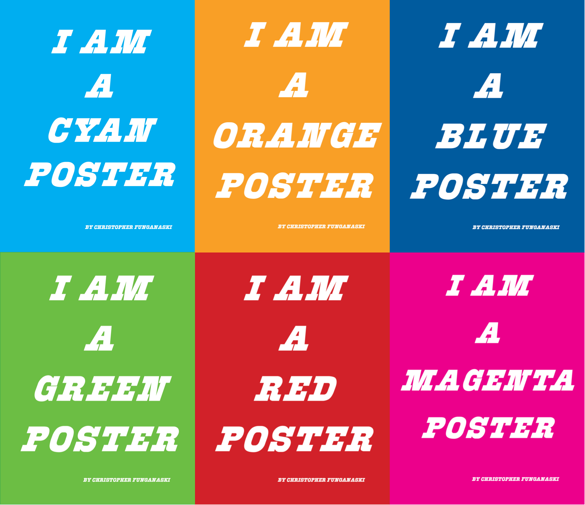

I AM A POSTER is one of my personal art/graphic design projects. It's goal is to remind people of their self-awareness and to be themselves. Because of the overwhelming popularity of computer science and related disciplines and the overall career-oriented culture, more and more students switch their major into computer science and related fields; clubs and events related to personal interests and spiritual life receive very little attention and support. To remind people to always be themselves and value their own characteristics, personalities, interests, hobbies and aspiration, I designed a series of "self-aware" posters showing off their individuality and personality. I printed out hundreds of these posters and put them everywhere on campus. Immediately, this project received a lot of attention and feedback. As putting posters on places other than poster boards is not allowed at Carnegie Mellon, I left a fake name Christopher Fungunaski on each poster.
Posters proud of their uniqueness.
 I then made a series of posters self-aware of their physical location and post them in the corresponding buldings on campus to remind people to be aware of their position.
 Posters self-aware of their color, reminding people to value their personal identity and individuality.
Posters self-aware of their color, reminding people to value their personal identity and individuality.